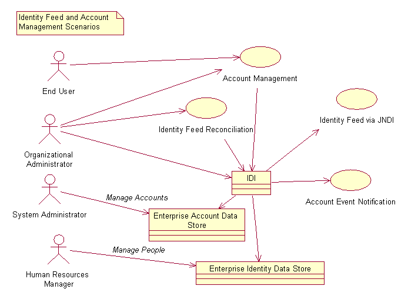

IBM Security
© Copyright International Business Machines
Corporation 2003, 2012. All rights reserved.
US Government Users
Restricted Rights – Use, duplication or disclosure restricted by
GSA ADP Schedule Contract with IBM Corp.
Purpose of this Document
Overview
Scenarios
Advantages of New Features
A Note on Protocols
Identity Data Feed
Account Management
IM as a DSMLv2 Client
ISDI as a DSMLv2 Server
IM as a DSMLv2 Server
ISDI as a DSMLv2 Client
Use of HTTPS
Password Management and Binary Attributes
Authentication
Filtering in Search Requests
Troubleshooting
This document is intended to explain the process required to use the IBM Security Directory Integrator (ISDI) to import identity information into Identity Manager (IM) and to manage accounts in the IM data store on external resources using ISDI. The target audience of this document includes organizational administrators who are competent or expert users of IM and ISDI.
The IM - ISDI integration features included with IM are:
The scenarios that these features may be used for are shown in Figure 1.

Figure 1: Scenarios for Use of ISDI - IM Integration Features
In Figure 1, the oval shapes represent scenarios or use cases where IM provides a service, the stick figures represent people or actors, and the rectangles represent external system. The actors are:
The primary goal of the identity feed reconciliation scenario is to do a bulk load of identity data into IM. The steps for it are shown in Figure 2.
The identity feed reconciliation is initiated by the organizational administrator in the IM user interface. IM sends a search request message to ISDI. ISDI searches the enterprise data store for the identity data. ISDI sends the data back to IM, which processes the data. This processing includes evaluation of the position in the organization tree to place people in, evaluation of role membership, evaluation of a supervisor relationship, possibly evaluation of provisioning policy, and insertion of data into the IM data store. Evaluation of the provisioning policy could result in account management actions.
The primary goal of the identity feed via JNDI scenario is to propagate changes made by the Human Resources Administrator in the enterprise data store to IM. The steps for it are shown in Figure 3.
The identity feed via JNDI scenario is initiated by the organizational administrator via the ISDI user interface by running an assembly line. The assembly line will retrieve the identity data from the enterprise identity data store and iterate over the data found. The assembly line will attempt to look up each entry in the IM data store by sending IM a DSMLv2 search request. If the entry does not already exist in IM or if there is a change in the data, then ISDI will send IM an add or modify request. The data processing performed by IM is the same as for the identity feed via reconciliation scenario. If the connector is operating in delete mode it may send delete requests to IM.
The primary goal of the account management scenario is to push out account management requests made from within IM to the enterprise account data store. This could be via an end user or via an Organizational Administrator. One scenario initiated by an end user is shown in Figure 4.
The primary goal of the account event notification scenario is to propagate account changes made by system administrator to an enterprise account data store to IM. On receiving this event notification, IM will evaluate provisioning policy. This scenario is shown in Figure 5.
The account management event scenario is initiated by an Organizational Administrator running an assembly line from within the ISDI user interface. This will lead to a search of the enterprise account management data store. ISDI will compare the entry found to the equivalent entry in the IM data store to detect changes made by system administrators direct to the enterprise system. ISDI will then send the request to IM, which will evaluate provisioning policies. If there is a violation of a provisioning policy then IM may send either a change or delete request to ISDI to either bring the account into compliance, to suspend it, or to delete it.
The main advantages of the new features over previous releases are:
For managing identity data, IM can act as a DSMLv2 client to retrieve person data from ISDI in reconciliation by executing searches against ISDI, which acts as a DSMLv2 server. IM may also act as a DSMLv2 server, accepting requests from a DSMLv2 client, in particular, ISDI using the JNDI service provider. Person placement rules and other business logic included with DSML file reconciliation and JNDI feed is as per previous releases.
For managing account data, provisioning policy checks and other business logic are done on account data changes as per previous releases with Directory Access Markup Language (DAML) clients.
Information on ISDI can be found in the distribution of the product. It is assumed that the reader is familiar with this.
It is not necessary for the reader to understand the various protocols and markup languages beyond the fact that IM is able to use several of these. However, due to their use in ISDI integration and discussion here a note is in order to explain the reason for the use of the different protocols and markup languages. The interested reader may find out more about these protocols at http://www.oasis.com.
Directory Services Markup Language version 1 (DSML) was created by the OASIS DSML working group to represent directory content. IM (at that time enRole 4.0) adopted it with a file binding for the HR Feed mechanism. While it provided an identity feed mechanism it had two basic limitations:
In addition, enRole 4.0 introduced Directory Access Markup Language (DAML) as a protocol for communicating with end-points. The difference between DSML and DAML is that DSML represents static data whereas DAML represents operations on that data, including add, modify, delete, and search. IM also acted as a DAML server allowing identity feed data to be fed to it from a client via a JNDI implementation. While this provided a mechanism to make changes to the identity information in the IM data store, it had these limitations:
DAML was submitted to the OASIS DSML working committee as a proposed draft. After consideration by the members of the DSML working committee, DSMLv2 was published. DSMLv2 has the same aim as DAML but the syntax is quite different. The present implementation of DSMLv2 in conjunction with the ISDI connectors and event handlers overcome the limitations described above:
The Connector API is used to load handlers for the different protocols. This is described in the document Provisioning Connector API.
The IM identity data feed facility is used to import people into the IM data store. As well as basic information about people, relations defining their position in the organization chart, organizational role membership, and supervisor. Since the intent of this document is to assist the reader in customizing schemas and importing data, it is important to understand the entities involved and the relations between them. The domain entities involved in the identity data feed are shown in Figure 6.
In the data feed process each person must have a distinguished name, which is used to identify the person when a lookup, modification, or delete request is received.
Each person has a set of custom attributes. The required and allowed list of attributes is determined by the set of object classes, which also should be present for each entry in a search or add request. Typically, the object-class used is inetorgperson, described by RFC 2798 (www.faqs.org/rfcs/rfc2798.html), however, any set of object classes is allowed.
A parent relation exists between each person and their business unit to define their position in the organization chart. A business unit may be an organization, an organizational unit, or a location. If no relation is specified in the data feed, then the person will be added at the top level of the organization where the ISDI Data Feed service is defined. The parent relation is defined by the placement rule script fragment, which is defined on the ISDI Data Feed service and refers to attributes in individual person entries. Since IM insists that the parent relation refers to an existing business unit entity, the business units should exist before the placement rules are evaluated.
Each person may optionally have a supervisor. The supervisor is identified by common name in the raw data fed into IM. IM searches for the supervisor by name and stores a reference to the supervisor's person entry. Since IM insists that the reference must point to a valid entry, supervisors should be imported into the IM data store before the staff that they supervise.
Each person may belong to zero or more organizational roles. The role is specified by the role name in the raw data fed into IM, however, as for the other relations, IM stores a reference to the organizational role entity.
An ISDI Data Feed service instance must also be created to define various parameters for the data import. However, this is not a domain entity since it is purely system data. The IM install program will install a service definition in the directory that can be used for identify feed (loading people into the IM system). The IM user interface may be used to define a service instance of type erDSMLv2Service, named ISDI Data Feed in the user interface. The details of this service are described in Table 1.
|
Item |
Attribute Name |
Label |
Description |
|
object class name |
objectclass |
not shown |
erDSML2Service: the name of the object class in the directory schema. |
|
required attributes |
namingcontexts |
Naming Context |
This attribute identifes the service. It must have a distinguished name format. It is required to identify the service when IM is acting as a DSMLv2 service. |
|
erServiceName |
Service Name |
A name to display on the user interface. |
|
|
erURL |
URL |
The url of the data source. Presently supported protocols are file, http, and https. |
|
|
ernamingattribute |
Name Attribute |
The naming attribute on a service used to define the distinguished names of entries in event notification. |
|
|
optional attributes |
erUid |
User ID |
Name of principal to authenticate DSMLv2 clients when using the JNDI client. |
|
erPassword |
Password |
Key to authenticate DSMLv2 clients when using the JNDI client. |
|
|
erPlacementRule |
Placement Rule |
Placement rule defining script to place entries within the organization chart. |
|
|
erUseWorkflow |
Use Workflow |
Boolean flag to indicate whether to use workflow when managing data. This will lead to evaluation of provisioning policies and an entry in the audit trail. |
An example of this service is shown in the Figure 7.
For ISDI to be used to provision accounts a schema must be defined for the service and account types and profiles must be defined and added to the data store. The entities involved in account management are shown in Figure 8.
The service profile contains meta information about the service, including a relation to the account profile for the accounts to be managed. The service profile also contains operational attributes used to determine the protocol handler and the processing factory to load. These are described in Table 2.
|
Attribute Name |
Description |
|
erObjectProfileName |
The name of the service profile |
|
erCustomClass |
The name of the object class for service instances. |
|
erAccountClass |
The name of the account class associated with the service profile. |
|
erAccountName |
The name of the account profile associated with the service profile. |
|
erproperties |
The names of either service instance attributes or service profile properties to be used by the ServiceProvider. |
|
erprotocolmappings |
An attribute map for service instance attributes. |
|
erserviceproviderfactory |
The fully qualified name of a Java class to load the ServiceProvider implementation. |
|
erxforms |
Used by DAML only. |
The AccountProfile entity only contains two attributes: the name of the account profile and the name of the LDAP object class for the account.
Service instances have a 'type of' relation with service profile that is computed based on the service object class. The Service instance has a name, a set of custom attributes, and a set of operational attributes. The custom attributes may be whatever is required for the specific service type, for example, the name of a database table. The operational attributes that should be defined in the schema are described in Table 3.
|
Item |
Name |
Description |
|
object class name |
objectclass |
Any descriptive name for the Service Type |
|
required attributes |
erITDICategory |
The type of entity to manage. Only 'Account' is supported at present. |
|
erServiceName |
A name to display on the user interface. |
|
|
erURL |
The url of the data source. Presently supported protocols are http and https. |
|
|
optional attributes |
erUid |
Name of principal to authenticate DSMLv2 clients when using the JNDI client. |
|
erPassword |
Key to authenticate DSMLv2 clients when using the JNDI client. |
|
|
ernamingattribute |
The naming attribute on a service used to define the distinguished names of entries in event notification. |
|
|
namingcontexts |
This attribute identifes the service. It must have a distinguished name format. It is required to identify the service when IM is acting as a DSMLv2 service. |
The account entity has a 'belongs to' relation with the service instance. The distinguished name should be unique across the service instance. If it is not, IM will not be able to locate the correct account for lookup, update, and delete requests and duplicates will be created. The distinguished name at present must be formed by the user id, for example, 'eruid=bubble'.
An account may be owned by a person. The relation may be created by IM directly if the account is provisioned or adopted via IM. However, if the account is discovered by IM during reconciliation or event notification then the relation must be computed. The relation is computed by comparing the user id of the account with the aliases of people in the system. If a one-to-one match between user id and alias is found then an owned by relation is created between the account. Otherwise the account will be orphaned, or in other words, created in the IM data store, but without an owner.
Password and status are attributes that have special meaning within IM. Accounts may also have a list of custom attributes that should be defined as needed for individual account types.
Accounts may also have relations with supporting data entities. 'Supporting data' is IM terminology for any kind of entity that IM should maintain but that it does not have special knowledge of. Examples are Windows NT global and local groups, and Active Directory containers. The supporting data entities are themselves imported into IM using the same method as accounts.
The documentation on the Connector architecture describes how to add these definitions to the IM data store. The reason for defining a service schema is that there is a one-to-one relation between account type and service type in the IM data model.
Provisioning policies are evaluated on account data as described in the Policy and Organizational Administrators' Guide. The most immediately relevant aspect of provisioning policy evaluation to the information discussed here is that evaluation can only take place if IM can associate the account entity with a person.
IM needs to function as a DSMLv2 client to initiate and process identity data feed reconciliation requests and account management requests.
In this mode IM will initiate search requests for identity data feed when the user schedules a reconciliation. An instance of a ISDI Data Feed service should be created.
For account management, add, modify, delete, and search requests will be created by IM based on actions from within the IM user interface. Change password, suspend, and restore operations are treated as special cases of modify requests. Passwords are sent as base 64 encoded binary attributes within messages. Therefore, https should be used when doing account management in a production environment.
The required parameters for the server to operate successfully in this mode are:
ISDI needs to function as a DSMLv2 server to respond to identity data feed reconciliation requests and account management requests initiated from the IM server.
ISDI 7.2, which provides a DSMLv2 protocol handler is required.
In order for ISDI to handle a DSMLv2 request these components will be required to be defined:
The sequence of events for a reconciliation process for an identity feed, focusing on the individual ISDI components is shown in Figure 9.

The details of the steps are:
The steps are a little different for account management where ISDI will also need to process add, modify, and delete requests. In those cases the components will be the same but the ISDI connector will operate in different modes. Iterate mode was used for processing the search request. Update mode can be used for both add and modify, although add-only mode is simpler if only add is required. Delete mode should be used for processing of delete requests. The DSMLv2 event handler is capable of inspecting the DSMLv2 request and routing to the appropriate assembly line. The model for data flow between ISDI components in processing account management requests is shown in Figure 10.
Follow these steps to define a DSMLv2 event handler:
A screen shot of an example DSMLv2 event handler is shown in Figure 11.
Connectors in add, modify, and delete assembly lines must define an input map to translate the attributes used in IM to the attributes found in the managed data source. Connectors in the search assembly lines must define an output map to translate the attributes found in the raw data source to entries that can be imported into IM. These must include:
When attributes have the same name in the managed resource as in IM, no translation is required in the output map. In that case, the appropriate checkbox will already be selected by ISDI. For attributes where a simple name change is required this can be accomplished by selecting a different checkbox to translate the connector entry attribute to the appropriate work attribute. However, some attributes will need to be either created or manipulated using scripts. For these attributes, the advanced mapping facility should be used.
When using ISDI as an end-point for account management, you may also need to define an assembly line for add / modify and an assembly line for delete and then specify these in the DSMLv2 event handler. For ISDI connectors operating in modify and delete mode, you will need to define link criteria. Change password, suspend, and restore requests are treated as modification requests.
The DSMLv2 event handler must be running to receive DSMLv2 requests.
IM needs to function as a DSMLv2 server to receive and process identity data feed requests and account management events initiated by ISDI. To accomplish this ISDI will need to be able to locate and connect with IM. IM will also have to know which service to use in creating person or account data. To succeed in this the attributes shown in Table 4 should be used in the service instance:
|
Attribute Name |
Label |
Description |
|
erServiceName |
Service name |
Required for the service to be able to displayed in the IM user interface |
|
erUid |
User ID |
Required for ISDI to be able to authenticate to IM. |
|
erPassword |
Password |
Required for ISDI to be able to authenticate to IM. |
|
erITDICategory |
Category |
Required to differentiate the type of entity being processed (person or account) |
|
ernamingattribute |
Naming Attribute |
Required specifies the attribute to use when forming distinguished names in servicing search requests |
|
namingcontexts |
Naming Context |
Identifies the service when processing the incoming request. Must be in the form 'attribute=value'. |
Authentication of DSMLv2 clients is done via a Java Authentication and Authorization Service Logon Module. The name of this login module is 'serviceLoginContext'. Although it should not be necessary to configure it, the J2EE application vendors' documentation (Websphere ) will provide information on configuration in case of troubleshooting.
IM will only return one entry as the result of a search request from a DSMLv2 client. Change password events need not be sent to IM because IM will not store the password.
ISDI needs to function as a DSMLv2 client in order to initiate identity feeds via the JNDI interface and to send account management event notifications. In order for ISDI to act as a DSMLv2 client to IM these components are required:
The sequence of messages that is passed between the ISDI components is shown in Figure 12.

An explanation of these steps is:
A JNDI connector should be used in add-only, update, or delete mode. The parameters necessary for the connector to communicate with IM are described in Table 5.
|
Attribute |
Value |
Description |
|
JNDI Driver |
com.ibm.dsml2.jndi.DSML2InitialContextFactory |
The name of the Java class implementing javax.naming.spi.InitialContextFactory |
|
Provider URL |
protocol://host:port/enrole/dsml2_event_handler |
Protocol may be either http or https. The host is the IP or DNS name of the machine. Port is the port that host is listening on. |
|
Authentication Method |
Simple |
Uses the principal and key supplied. |
|
Login Username |
Implementation specific |
Must match the value of User ID defined on the IM service instance. |
|
Login Password |
Implementation specific |
Must match the value of Password defined on the IM service instance. |
|
Name Parameter |
$dn |
Must match the name of the distinguished name in input map and link scripts. |
|
Search Base |
Implementation specific |
The search base is used to locate the IM service. It must match the value of Naming Context defined on the IM service instance and it must be in the form 'attribute=value'. |
|
Search Filter |
(objectclass=*) |
Required to be present but does not often need a more specific value. |
The provider URL may also include the tenant, if IM is installed as a multi-tenant system. In this case the Provider URL would have the form:
protocol://host:port/enrole/dsml2_event_handler/tenantID
Usually the tenant id is not required, since IM will look up the default value in it's configuration files. The naming context may also be added to the url instead of being specified in the search base parameter. If this was done the url would look like this:
protocol://host:port/enrole/dsml2_event_handler/tenantID/namingContex
User should note that, while the search base and the naming context in the url are alternative ways of specifying the same parameter, the search parameter is only used for searches, whereas the namingcontext in the url is used for all requests. This becomes important for add requests. If the search base parameter specifies the naming context it won't be used in an add request unless the user specifically adds it to the distinguished name of the entry.
There are a number of points available within ISDI to customize the data sent to IM. For example, when performing an identity feed the data desired to be stored within IM may not necessarily be available from a single enterprise data source. In this case more than one ISDI connector can be used to collect and combine information from the enterprise data sources before sending the entry to IM. The flexible scripting environment available from with IM is ideal for this.
For account management and identity data feed over the network in a production environment it is strongly recommended to use a secure protocol. Communication over https is provided to maintain the privacy of data used in communication between IM and ISDI using cryptographic methods. Transmission of this data over the network without encryption should only be used in development, test, or pilot environments.
The implementation of https for IM - ISDI communication is implemented using the Java Secure Sockets Extension (JSSE) https protocol handler. The JSSE implementation is provided as part of the J2EE application server.
Documentation on configuration of JSSE with the application server can be found from the application server vendors' site: Websphere Application Server Knowledge Center. More fundamental information on JSSE for Websphere can be found here.
The certificate stores used by these interfaces and implementations uses the Java Key Store (JKS) format. Starting with Websphere version 6.1 you can manage your keys using the Websphere administrative console. More information can be found here.
Although the demonstration certificates provided with the application servers can be used to test https configuration, for production either certificates should be customer self issued or obtained from a vendor such as Verisign.
The steps listed here are for configuring http with Websphere.
Steps for enabling SSL:
java.protocol.handler.pkgs=com.ibm.net.ssl.internal.www.protocol
in the JVM settings using the Websphere console.
javax.net.ssl.trustStore=<full path to trust store>
javax.net.ssl.trustStorePassword=<password to trust store>
in the JVM settings using the Websphere console.
The password management attribute in IM is defined with a binary syntax. In addition, there may be user-defined attributes that are binary. Because XML is a text based markup language, these attributes are transported over the network using a base 64 encoding. Base 64 encoding is a method for representing binary data as text. In order for this to work, both IM and ISDI must have a common understanding of the binary nature of these attributes.
The DSMLv2 event listener in ISDI will base 64 decode attributes if they are well known binary attributes or if they appear in the listener configuration tab in the Extra Binary Attributes Field.
In some cases, attributes on the managed resource may be strings, even though the attribute coming from IM is binary. This will not be uncommon for password, which many resources define as binary and others define as a string. In this case, a type conversion must be done. The simplest way to do this is to insert a hook in the ISDI connector output map such as this example:
ret.value = new java.lang.String(work.getObject("erpassword", "UTF-8"));Binary attributes should be encoded to a Base 64 string in any request from ISDI to IM or vice-versa. At receiver's end, these attributes should be decoded from Base 64 string to get the binary value. In IM, only the binary attributes with syntax listed in $IM_HOME\data\Dsml2Schema.properties are encoded or decoded, while communicating with ISDI.
In some cases, the syntax of a particular binary attribute may not be present in Dsml2Schema.properties.
Steps to add a new attribute syntax in Dsml2Schema.properties:
syntax.binary.octetstring=1.3.6.1.4.1.1466.115.121.1.40
With endpoints hosted by the Agent Development Kit (ADK), authentication of requests was done via a lookup to a local password database on a per agent basis and setting of that password was done via a simple menu item in the agent configuration AgentCfg tool. With an ISDI DSMLv2 event handler this is now done by setting an ISDI Connector in the event handler configuration screen. That connector should be configured to operate in lookup mode with an attribute of 'username'. An example database is given in the LDAP account management example.
The reconciliation management user interface for IM allows the user to enter a search filter for each reconciliation unit. This filter is passed to ISDI, however, within ISDI configuration is required to make use of the filter. The connector must be customized using a script to read the filter from the incoming request and set it into the search filter attribute for the LDAP connector. Out of the box only the LDAP and JNDI connectors will be able to make use of this.
To implement this, in the ISDI search assembly line, in the Hooks tab for the connector, add a script in the Before Selection Hook. The script should read the value for the work property "dsml.filter" and set it into the connector. This is demonstrated in the ldap account management example.
Within ISDI most messages are printed to the main console and there are a number of methods to get more information about the events that occur. See the ISDI documentation for more details.
For troubleshooting within IM the logs provide useful information. These can be configured via the JLog settings in <IM_HOME>/data/enRoleLogging.properties. Most of the functionality here can be traced with the setting:
logger.trace.com.ibm.itim.remoteservices.level=DEBUG_MAX